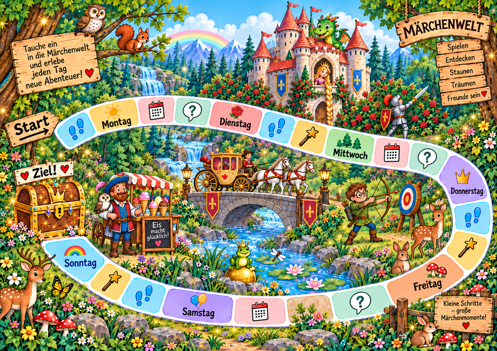

<!doctype html><html lang="de"><meta charset="utf-8"><meta name="viewport" content="width=device-width,initial-scale=1"><title>Märchen & Zauber – Vorschau</title><style>body{margin:0;background:#edf6e7;font:18px Arial;color:#173c2a}header{padding:16px}button,a{font:inherit;padding:10px}main{overflow:auto;max-height:80vh}img{display:block;width:100%;min-width:600px}</style><header><h1>Märchen & Zauber</h1><p>Spielfeld-Vorschau · Die Aufgaben und das Würfeln gehören zur Vollversion.</p><button id="minus">−</button><button id="plus">+</button> <a href="index.html">Hauptauswahl</a></header><main></main><script>if(window.frameElement)document.querySelector('a').hidden=true;let size=100;for(const [id,delta] of [['minus',-25],['plus',25]])document.getElementById(id).onclick=()=>{size=Math.max(100,Math.min(300,size+delta));document.getElementById('picture').style.width=size+'%'};</script></html>